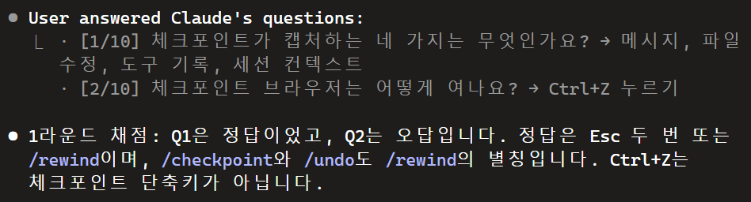
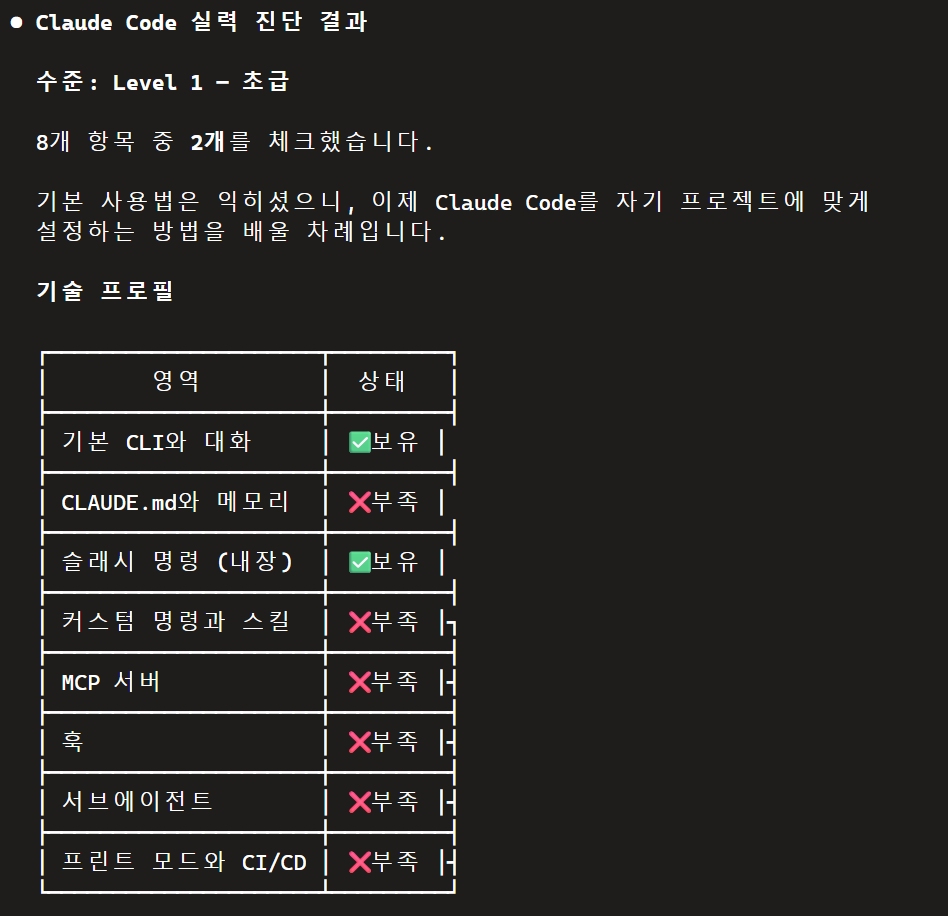
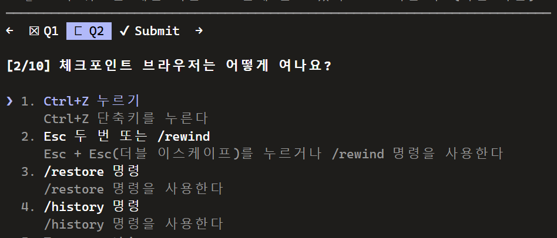
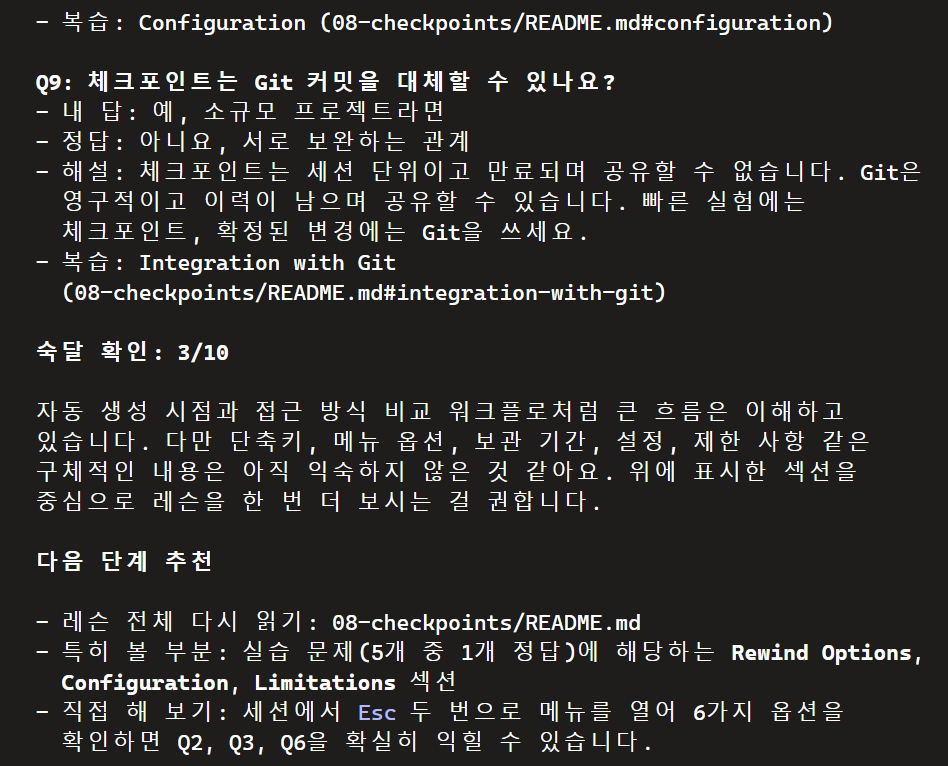

Claude Code를 처음부터 단원별로 배우는 무료 교재예요(MIT). 10단원이 한국어판(ko 폴더)으로도 있고, 처음 하는 사람 코스는 약 2시간 반이에요. 교재 폴더에서 Claude Code를 열면 /self-assessment로 내 수준과 배울 순서를 받고, 단원마다 /lesson-quiz로 10문제를 풀면 바로 채점하고 다시 볼 곳까지 짚어 줘요.

터미널에서 git clone https://github.com/luongnv89/claude-howto 를 쳐요. git이 없으면 깃허브 저장소 화면의 초록 Code 버튼 → Download ZIP으로 받아 압축을 풀어요.
cd claude-howto 로 들어가서 claude 를 쳐요. 처음엔 '이 폴더를 믿나요?'가 뜨니 'Yes, I trust this folder'를 골라요. 퀴즈 두 개는 이 폴더 안(.claude/skills)에 들어 있어서, 꼭 이 폴더에서 열어야 보여요.
/self-assessment 한국어로 해 줘 라고 쳐요. 빠른 진단(약 2분)과 심층 진단(약 5분) 중 고르고, 해 본 것을 체크하면 수준(초급·중급·고급), 부족한 영역, 단계별 맞춤 학습 경로가 한국어로 나와요. 보기는 숫자로 고르고, 여러 개 고르는 질문은 숫자로 체크한 뒤 →로 넘겨요.

깃허브 README 위 언어 줄에서 '한국어'를 누르거나 ko 폴더를 열어요. 처음 하는 사람 순서는 슬래시 명령어(30분) → 메모리(45분) → 체크포인트(45분) → CLI 기초(30분), 합쳐 약 2시간 반이에요(README 표 기준). 그림(Mermaid) 안 글자는 영어 그대로예요.
/lesson-quiz 08 문제랑 보기는 한국어로 내 줘 처럼 단원 번호(01~10)나 이름(memory, hooks…)을 붙여 쳐요. 언제 푸는지(학습 전·중·후)를 고르면 2문제씩 5라운드가 나오고, 라운드마다 바로 맞고 틀린 걸 알려 줘요.

10문제가 끝나면 점수와 함께 '특히 볼 부분'으로 교재의 어느 절을 다시 읽으면 되는지 짚어 줘요. 다시 풀기·다른 단원·틀린 주제 설명 듣기 중에 고를 수 있어요.

단원 폴더에는 바로 복사해 쓰는 파일이 들어 있어요. 예: 내 프로젝트에 CLAUDE.md를 만들 땐 ko/02-memory/project-CLAUDE.md를 내 프로젝트 폴더에 CLAUDE.md라는 이름으로 복사한 뒤 내 규칙으로 고쳐요.
터미널에서
git clone https://github.com/luongnv89/claude-howto
받은 뒤
cd claude-howto && claude
Claude Code 안에서, 처음 한 번
/self-assessment 한국어로 해 줘
단원을 읽은 뒤(번호만 바꿔서)
/lesson-quiz 08 문제랑 보기는 한국어로 내 줘
퀴즈에 붙이는 번호
01 슬래시 명령어 · 02 메모리 · 03 스킬 · 04 서브에이전트 · 05 MCP · 06 훅 · 07 플러그인 · 08 체크포인트 · 09 고급 기능 · 10 CLI
도움이 되셨다면
@ai.antenna.kr
에서 바로 쓰는 AI 활용법을 계속 올립니다.